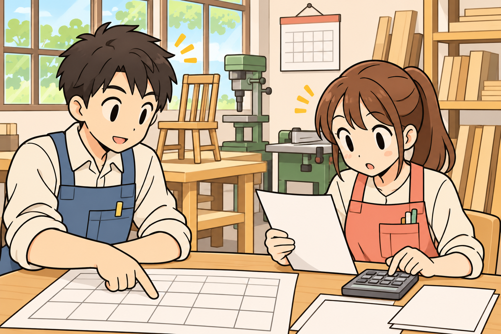

簿記2級の製造間接費｜予定配賦と差異の符号を2例で検算
製造間接費は製品へ直接追跡しにくい工場原価を集め、適切な基準で配賦するものです。ここでは実際原価計算で予定配賦を採用する例として、実際発生・予定配賦・差異を分けます。全ての原価計算が同じ式になるわけではありません。
「実際−配賦」と「配賦−実際」では符号が逆になります。本記事は差異の額と有利・不利を明記します。「借方は常にプラス」「不利差異なら必ず完成品へ加算」という一般化はしません。
予定配賦率と実際操業度
同じ期間・同じ単位の予算と基準操業度を対応させます。実際原価計算のこの予定配賦例では、予定配賦率に実際操業度を掛けます。標準原価計算で標準時間を使う計算とは区別します。直接・間接の判断も製品への追跡条件によります。
同じ工房でも、計画の資料と実績の資料は役割が違う

提供教材のAI生成イラストによる架空場面です。紙面の線や電卓の形から金額・時間は読み取りません。計算条件は次の自作例で指定します。
ここでの順序は資料が計算で担う役割を示します。実際発生額を「今月届いた請求書の合計」や「現金で払った額」と同一視しません。減価償却費や未払の調整なども含め、対象期間の製造間接費を集計する条件を確かめます。
自作例1：元の105,000円と7,000円を検算
同じ月の予算120,000円、基準400時間、実際350時間、実際発生112,000円。他の費用なし。予定配賦額、差異の有利不利、差異を取り出す仕訳は？
ノートに写して埋める資料整理シート
上の4つの数値を混ぜず、次の3段階へ置きます。画面への入力・保存用ではありません。
確認：400時間と350時間は、それぞれどの段階で使いますか？ 112,000円を予定配賦率の分子へ入れていませんか？
解答・考え方を見る
記入例：1は120,000円・400時間・300円／時間。2は300円／時間・350時間・105,000円。3は112,000円・105,000円・7,000円・不利です。
率は120,000÷400＝300円/時間。配賦は300×350＝105,000円。借方：仕掛品105,000／貸方：製造間接費105,000です。
実際112,000−配賦105,000＝7,000円の不利差異。実際発生を借方に記録した製造間接費勘定には借方7,000円が残ります。借方：製造間接費配賦差異7,000／貸方：製造間接費7,000で取り出します。一般の全ての勘定について「借方＝増加」と説明する例ではありません。
400時間は予定配賦率を決める分母、350時間は配賦額を求める実際の基準量です。ここで300×400とすると、実際350時間への配賦額になりません。また112,000÷350は実際配賦率を求める別の計算で、この例で事前に設定した予定配賦率ではありません。

変動予算による2分解の条件
自作例2：予算差異と操業度差異
元の記事の別例です。基準400時間に対する変動費予算60,000円、固定費80,000円。実際350時間、実際発生136,000円。この範囲で変動費は時間比例、固定費は一定という仮定です。配賦差異を2分解してください。
解答・考え方を見る
変動費率150円/時間、固定費率200円/時間、予定配賦率350円/時間。配賦122,500円、実際時間に対応した予算は150×350＋80,000＝132,500円です。
実際−予算＝3,500円の不利な予算差異。予算−配賦＝200×（400−350）＝10,000円の不利な操業度差異。合計13,500円は実際136,000−配賦122,500と一致します。「配賦−実際」の表記なら−13,500円ですが、有利不利は変わりません。
この計算だけから無駄遣いや責任者の失敗は確定しません。価格や消費、設備利用等の資料が必要です。標準原価の能率差異等を含む別の分解へ、無条件にこの2分類だけを当てはめません。
差異の処理先を確かめる
原価計算基準47は、実際原価計算の差異は材料受入価格差異を除き原則として当年度の売上原価へ賦課し、一定の場合は在庫等へ配賦する取扱いも定めています。売上原価処理の指定なら不利差異を加算し、有利差異を減算します。製造原価報告書への加算や在庫への配賦を省略した式にまとめません。
確認した一次資料
最終確認：2026年11月11日。公式の基準・制度と、編集部の架空例・学習提案を分けています。
よくある質問
製造間接費は必ず予定配賦しますか？
実際配賦と予定配賦等を区別します。本記事は実際原価計算で予定配賦を採用した架空例です。標準原価計算の標準時間を使う式と混ぜません。
借方はいつもプラスですか？
勘定の性質と取引によって異なります。本記事の製造間接費勘定では実際発生を借方、予定配賦を貸方に記録し、その残高から差異を判定します。
不利差異なら無駄遣いが原因ですか？
差異だけでは原因や担当者の責任は確定しません。価格・消費・操業等の条件と資料を照合します。
次に確認する記事
使った条件と、次に確かめる論点を学習メモへ残せます。
Study Questで学習を記録する →